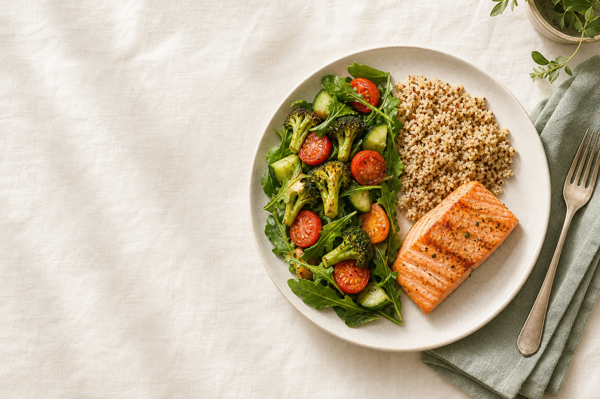

Как собирать полноценную еду без весов, подсчёта калорий и строгих запретов
Пособие для повседневной жизни · 2026
Перед началом
Вам не нужно менять всё питание за один день. Прочитайте пособие один раз, а затем выберите один приём пищи и примените к нему формулу тарелки.
Что уже есть на тарелке? Не оценивайте — просто назовите компоненты.
Чего не хватает для баланса: овощей, белка, гарнира или жиров?
Как меняются сытость, энергия и удовольствие после еды?
Сбалансированная тарелка — ориентир, а не экзамен. Пропорции могут меняться в зависимости от аппетита, активности, доступных продуктов и контекста.
Урок 1
Сытость — это не только объём еды. На неё влияют состав, вкус, темп приёма пищи, сон, стресс и время с прошлого приёма еды.
Помогает дольше сохранять сытость и участвует в обновлении тканей. Источники: рыба, мясо, яйца, молочные продукты, бобовые, тофу.
Добавляет объём и поддерживает пищеварение. Источники: овощи, фрукты, бобовые, цельные крупы, семена.
Основной доступный источник энергии. Предпочтение цельным продуктам не означает запрет хлеба, пасты или десертов.
Помогают усваивать жирорастворимые витамины и делают еду вкуснее. Важны умеренность и разнообразие источников.
В салате может быть много объёма, но мало энергии и белка. Через короткое время организм закономерно попросит ещё еды. Это не отсутствие силы воли — это недостаточно полный приём пищи.
Практика. После следующего приёма пищи оцените сытость через 30 минут и через 2–3 часа по шкале от 1 до 10. Не стремитесь к «правильной» цифре — собирайте наблюдения.
БАЛАНС.03Урок 2
Свежие, запечённые, тушёные, замороженные — способ не принципиален. Часть можно заменить фруктами.
Порция примерно с ладонь — только визуальный ориентир, а не строгая норма.
Крупы, картофель, паста, хлеб, кукуруза. При высокой активности порция может быть больше.
Жиры: масло, орехи, семена, авокадо, сыр или жирная рыба. Напиток: вода по жажде. Вкус: специи, соусы и любимые добавки помогают получать удовольствие и придерживаться привычки.
Формула описывает пропорции в среднем, а не обязательную геометрию каждого блюда. Суп, рагу, пасту или сэндвич можно мысленно разложить на те же компоненты.
БАЛАНС.04Урок 3
| Овощи и фрукты | Белок | Гарнир | Жиры и вкус |
|---|---|---|---|
| Брокколи Цветная капуста Морковь | Курица Индейка Постная говядина | Гречка Овсянка Булгур | Оливковое масло Орехи Семена |
| Помидоры Огурцы Перец | Рыба Морепродукты Яйца | Рис Киноа Кускус | Авокадо Тахини Песто |
| Капуста Свёкла Тыква | Творог Йогурт Сыр | Картофель Батат Кукуруза | Сметана Сыр Йогуртовый соус |
| Замороженные смеси Квашеные овощи Зелень | Чечевица Фасоль Нут | Цельнозерновой хлеб Паста Лаваш | Хумус Оливки Льняное семя |
| Яблоки Ягоды Цитрусовые | Тофу Темпе Соевый фарш | Перловка Пшено Хлебцы | Горчица Соевый соус Специи |
Овощи, ягоды и рыба из морозилки экономят время и остаются полноценной частью рациона.
Фасоль, нут, тунец, кукуруза и томаты без сложной готовки помогают собрать еду за минуты.
Запишите по одному продукту из каждой категории, который легко купить и приятно есть.
БАЛАНС.05Урок 4
Утром не обязательно есть «завтраковые» продукты. Работает та же логика: источник белка + углеводы + овощи или фрукты + немного жира.
Овсянка + густой йогурт + ягоды + орехи. Белок и жиры делают кашу более сытной.
Яйца + хлеб + овощи + авокадо. Размер порций определяйте по аппетиту.
Творог или йогурт + банан + мюсли + семена. Подходит и как перекус.
Сэндвич с индейкой или хумусом + овощи + фрукт. Удобно собрать заранее.
Выберите 2 компонента: углеводы или фрукт + белок или жир.
Примеры: яблоко + орехи; хлебцы + творог; банан + йогурт; овощи + хумус.
Кофе — напиток, а не приём пищи. Если утром нет аппетита, начните с небольшого варианта и понаблюдайте, как это влияет на вечерний голод.
БАЛАНС.06Урок 5
Урок 6
Удобный запас важнее идеального меню. Выберите 2–3 продукта из каждой группы — этого достаточно для десятков комбинаций.
| Овощи и фрукты | Белок | Гарнир | Добавки |
|---|---|---|---|
Сначала используйте то, что уже есть. Перед магазином загляните в холодильник и морозилку. Планируйте блюда вокруг продуктов, которые нужно съесть раньше.
БАЛАНС.08Урок 7
Ищите блюдо с понятным источником белка и гарниром. Овощи можно заказать салатом или гарниром отдельно.
К пицце добавьте салат; к супу — сэндвич или белковую закуску; к суши — эдамаме или салат.
Сочетайте доступное: йогурт + банан + орехи; сэндвич + овощи; сыр + хлеб + фрукт.
Вы не обязаны собирать идеальные пропорции. Выберите то, что хочется, добавьте доступные овощи и остановитесь на комфортной сытости.
| Если хочется... | Можно добавить... |
|---|---|
| Пиццу | Салат или овощную нарезку; при желании — белковую закуску |
| Пасту | Курицу, тунца, бобовые или сыр + овощи |
| Картофель | Рыбу, яйца или мясо + салат |
| Десерт | Ничего обязательного. Ешьте его с удовольствием; если голодны — сначала полноценную еду |
Не пытайтесь одновременно выбрать «самое полезное», минимальную калорийность и идеальный размер порции. Спросите: «Как сделать этот приём пищи чуть более полноценным?»
Навык
Формула тарелки помогает со структурой, но не заменяет сигналы тела. Ваш аппетит закономерно меняется день ото дня.
| Уровень | Как может ощущаться | Что можно сделать |
|---|---|---|
| 1–2 сильный голод | Слабость, раздражение, сложно выбирать и есть медленно | Поесть как можно скорее; не требовать от себя идеального решения |
| 3–4 умеренный голод | Пустота в желудке, мысли о еде, снижение концентрации | Удобный момент для полноценного приёма пищи |
| 5–6 нейтрально | Комфорт, еда не занимает внимание | Можно продолжить дела или закончить еду |
| 7–8 сытость | Удовлетворение, ощущение наполненности без тяжести | Комфортная точка завершения для многих, но не строгая цель |
| 9–10 переполнение | Тяжесть, сонливость, дискомфорт | Не компенсировать голоданием; сделать вывод о контексте и двигаться дальше |
Систематическое недоедание усиливает мысли о еде и вероятность переедания позже.
Вкус — полноценная часть питания. Удовлетворённость помогает завершить приём пищи.
Наблюдение вместо оценки. «Я переела, потому что долго не ела» полезнее, чем «у меня нет силы воли». Первое даёт информацию для следующего раза.
БАЛАНС.10Шаблон
Запланируйте не рецепты, а комбинации. Оставьте 1–2 окна для доставки, остатков или спонтанного выбора.
| День | Основная комбинация | Быстрый запасной вариант |
|---|---|---|
| Пн | ||
| Вт | ||
| Ср | ||
| Чт | ||
| Пт | ||
| Сб | ||
| Вс |
Сварите одну крупу, подготовьте один источник белка, вымойте овощи, смешайте соус. Не обязательно готовить всю еду заранее — достаточно сократить количество решений.
Финальная практика
Выберите изменения, которые реально повторить. Устойчивое «достаточно хорошо» полезнее редкого идеала.
Например: добавлять овощи к обеду; держать в морозилке овощную смесь; не пропускать завтрак в рабочие дни.
Короткая проверка тарелки
Баланс — это не точка назначения.
Это способ заботиться о себе каждый день.